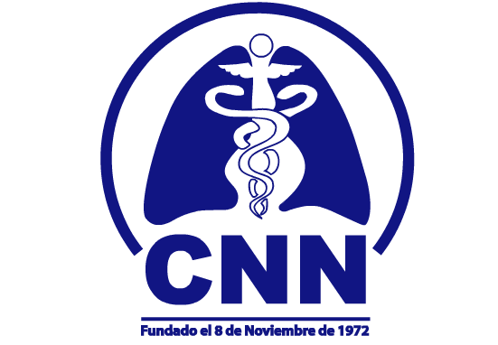

Cédula Profesional
10431658
Médico Cirujano · DGP / SEP
Verificar en SEP →Neumólogo egresado del INER–UNAM, maestro en EPOC por la Universidad Católica de Murcia y maestro en ciencias. Adscrito a la Clínica de Tabaquismo y EPOC del INER y consulta privada en Médica Sur.
Soy el Dr. Robinson Robles, neumólogo. Atiendo en Médica Sur, en la Ciudad de México, a personas con asma, EPOC, apnea del sueño y otras enfermedades respiratorias. Mi manera de trabajar es sencilla: escucharte con calma, explicarte con claridad qué está pasando —sin tecnicismos— y construir contigo un plan que de verdad puedas seguir.
Me formé como neumólogo en el INER, el instituto de referencia nacional en enfermedades respiratorias, y completé una maestría en EPOC en la Universidad Católica de Murcia. Hoy combino la consulta diaria con la investigación: estoy adscrito a la Clínica de Tabaquismo y EPOC del INER, donde sigo de cerca la evidencia más reciente para llevarla a tu tratamiento.
Esa doble experiencia —consultorio e investigación— es la que guía cada decisión sobre tu salud. Mi compromiso es que salgas de la consulta sabiendo qué tienes, por qué y cuál es el siguiente paso, con la tranquilidad de sentirte acompañado en cada control.
Cada credencial es verificable de forma independiente en los registros oficiales correspondientes.
Médico Cirujano · DGP / SEP
Verificar en SEP →Neumología · DGP / SEP
Verificar en SEP →
Certificación vigente hasta 2031
Sitio del Consejo →El Dr. Robles forma parte del equipo de investigación en Tabaquismo y EPOC del INER y ha colaborado en más de 15 estudios publicados en revistas médicas internacionales. Esa preparación se traduce en una consulta al día y apoyada en evidencia.
Estudia cómo el humo de cocinar con leña daña los pulmones —no solo el cigarro—, un problema frecuente en México.
Investiga la adicción a la nicotina y los daños del cigarro y del vapeo, para acompañarte a dejarlo.
Por qué algunas personas quedan con menos fuerza y peor respiración tras un COVID grave, y cómo evaluarlo.
Analiza cuántos mexicanos enferman por problemas respiratorios, para orientar mejores decisiones de salud.
Su formación y su práctica se apoyan en el INER —centro de referencia nacional en enfermedades respiratorias—, la UNAM, la Universidad Católica de Murcia y el Hospital Médica Sur.
Reconocido con el Premio de Excelencia EGEL 2016 y la Decoración Miguel Hidalgo 2020.
En el INER, el centro de referencia nacional en enfermedades respiratorias, avalada por la UNAM.
Posgrado internacional en EPOC y formación en investigación clínica aplicada a las enfermedades respiratorias.
Atiende pacientes e investiga de forma activa: EPOC, tabaquismo, vapeo y secuelas del COVID.
Pertenezco a las sociedades nacionales e internacionales que reúnen a la comunidad neumológica de habla hispana e inglesa.
La consulta privada se realiza en Médica Sur, hospital privado de tercer nivel ubicado al sur de la Ciudad de México.
Médica Sur, Torre 1
Consultorio 612
Puente de Piedra 150
Pueblo Quieto, Tlalpan
C.P. 14050, CDMX
Presencial en Médica Sur
Teleconsulta · Español · Inglés
Aseguradoras: GNP, AXA, MetLife, Bupa, Allianz, Monterrey, Zurich, MAPFRE, Atlas.
Si tienes una enfermedad respiratoria crónica, síntomas persistentes o necesitas segunda opinión, agenda valoración. Atención presencial en Médica Sur o teleconsulta.